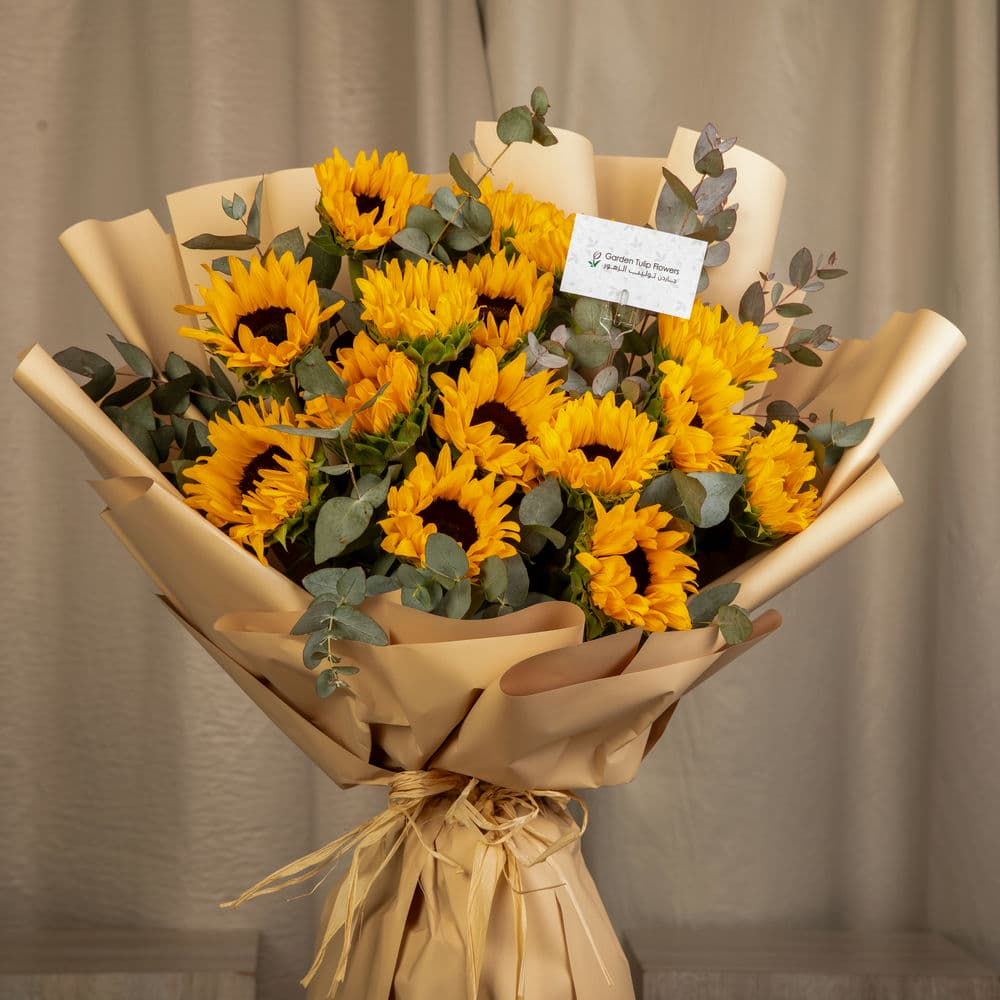

For You, Suraiya Saleem 🌻
You're my sunflower and I love you soooo much.

Hey love ❤️
I made this for you,, you deserve banquets of sunflowers everydayyy.
Scatter Bouquets
Add 5 More
Clear
Show a Note
Background removal threshold
60
Tip: increase threshold if the photo's background is similar to flowers.